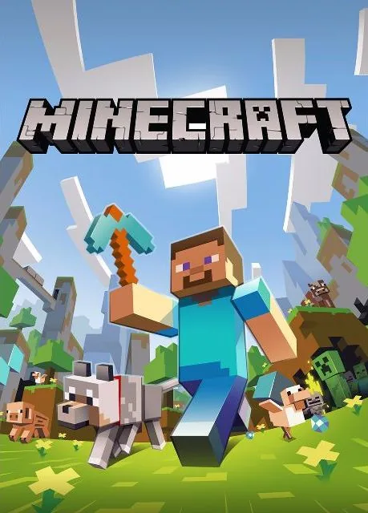

Mockup: “My Journey” as a 2D walk. Keep scrolling to walk along the road; each billboard tells part of the story. All billboard text is a first draft.
About Me

Versatile Gameplay Programmer | Designer crafting gameplay, levels, and systems that challenge and inspire.
I strive to create experiences that engage players and encourage them to keep returning. My passion for Game Development started when I was younger and used games as a means to escape reality and become immersed in the world.
My goal is to create similar experiences for players to engage and enjoy.
I’m open to new opportunities and always love to chat. Say hi, whether it’s about work or anything else!
My Journey


The Start
These are the first few games I remember playing that really influenced my childhood and my love for gaming.

FusionFall
A core game memory that has stuck with me to this day. This era of browser games will always have a place in my heart.

Pokémon
I remember getting my first shiny Pokémon and discovering all the secrets hidden in the games.

Minecraft
Minecraft let me take a blank canvas and build whatever my mind could think of: a blank canvas to fill to my imagination’s content.

Mario Kart
I remember learning the different routes and off-road shortcuts on each course, and discovering everything a racing game can contain.
These worlds captivated me.
Each of these games has influenced my life, and they still shape some of the gameplay decisions I make today.
The Spark
As I got older, I started seeing games from a different perspective and looking into the design and world-building they offer.

Titanfall 2
The movement and story behind this game stuck out to me, and intrigued me enough to recreate its movement style myself.

Destiny
Creating an engaging story that has lasted 10+ years, with some of the smoothest gunplay I’ve ever felt, really influenced my thinking.
I wanted to know how they were made.
These games opened my mind to what games can be, and led me down the rabbit hole of how games are made, until I finally discovered game development.
SCAD
At the Savannah College of Art and Design I studied Interactive Design and Game Development, and started building games of my own.

Finding my people
SCAD gave me a community of artists, designers and programmers to learn from, and the chance to work on real projects with real teams.

Cosmic Assault
One of my first complete games: a Unity shooter I later rebuilt into an endless survival mode with scaling difficulty and score-driven bosses.

Cave of Papa Bois
An environment inspired by Caribbean folklore, where I learned the full 3D art pipeline from greyboxing to final lighting.

Project Rod3nt
My capstone: a stealth action game where I led gameplay programming, built the AI and ability systems, and ran QA with a team of 15.
Now
Today I’m doing what that kid with the controller always wanted: making games for other people to fall in love with.
Recent SCAD graduate
I graduated Magna Cum Laude in 2026 with a BFA in Interactive Design and Game Development.
5 titles released on Steam
From game jam prototypes to full releases, I’ve helped ship five games on Steam, and I’m only getting started.

Studio Nailgun
As Gameplay Programmer and Technical Artist, I helped turn a 48-hour game jam idea into Night of the Living Bubble, now on Steam.

DogWater Studios
As an Unreal Engine Developer on Imprint, I work on level streaming, performance and core mechanics.

Experiences
-
Unreal Engine Developer
Dogwater Studios
Jun 2026 - Present
-
Gameplay Programmer & Technical Artist
Studio Nailgun
Jan 2025 - Present
Projects
-
Technical & VR Manager
SCADServe X Ronald McDonald House
Jan 2026 - Mar 2026
-
Gameplay Programmer & QA Engineer
Project Rod3nt
Sept 2025 - May 2026
-
Project Manager
SCADPRO X Provost
Jan 2025 - Mar 2025
-
UI Programmer
Xolo and the Forgotten Gods
Sept 2024 - May 2025
-
Gameplay Programmer
Scour
Sept 2024 - May 2025
-
Level & Lighting Designer
SCADPRO Rapid Fire X Deloitte
Mar 2024 - May 2024
Game Jams
-
Gameplay Programmer & Designer
Luck of the Maze- Unity Game Jam 2026
Nov 2026
-
Gameplay Programmer
Under the Lens- Global Game Jam 2026
Jan 2026
-
Gameplay Programmer & Technical Designer
Night of the Living Bubble- Global Game Jam 2025
Jan 2025
-
UI Programmer & Designer
Eye Love You- Global Game Jam 2024
Jan 2024
Education
-
BFA Interactive Design and Game Development (Magna Cum Laude)
Savannah College of Art and Design
Jun 2022 - Jun 2026